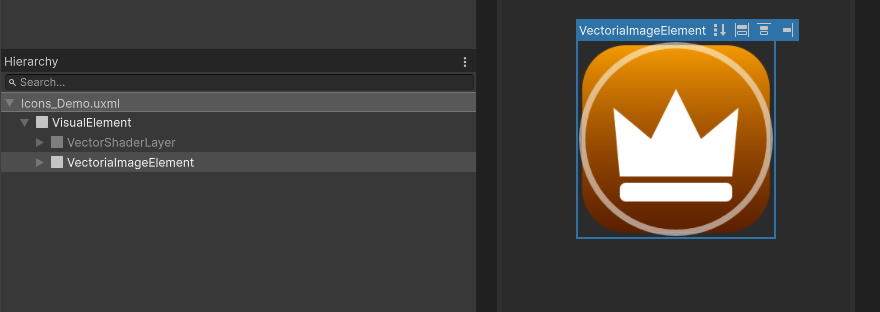
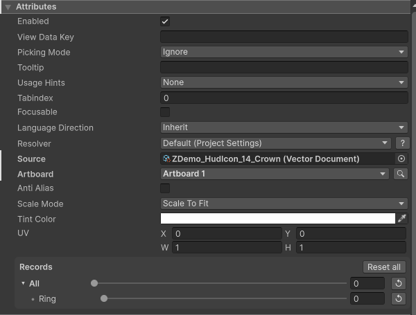
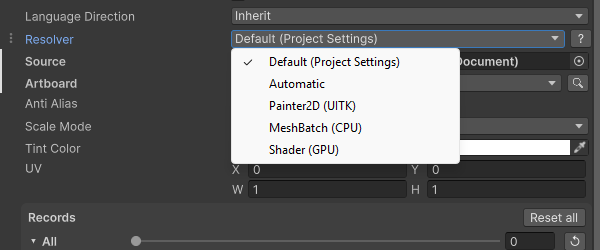

UI Toolkit
VectoriaImageElement in UI Builder, UXML and code.
VectoriaImageElement (namespace Vectoria) is a VisualElement that draws one artboard of a .vpaint. It is sharp at any size, and you size it like any other element.
Add it in UI Builder
- Open your UXML in UI Builder. In the Library, switch to the Project tab.
VectoriaImageElementis listed under Custom Controls (C#). Drag it into the Viewport. - Select it. In the Inspector, set Source to your
.vpaintand pick an Artboard. The magnifier beside Artboard lists the artboards in your project, and picking one sets Source and Artboard together. - Give it a size in the Size section of the Inspector (or let it grow with flex).

Next to your element, UI Builder shows a VectorShaderLayer. That is the shared mesh the Shader resolver draws into. Leave it alone, see Shader Setup.
Attributes
These are the fields in the Inspector, with their UXML attribute names.

| Inspector | UXML | Meaning |
|---|---|---|
| Resolver | resolver | How the artwork is drawn. See Choosing a resolver. The ? button beside it opens a comparison window. |
| Source | source | The .vpaint document. |
| Artboard | artboard-id | The id of the artboard to show. The Artboard dropdown in the Inspector sets it for you. |
artwork | UXML only. A UI Vectoria sub-asset that sets the document and the artboard in one go. The magnifier beside Artboard fills it in. | |
| Anti Alias | anti-alias | MeshBatch only: soften edges with a one-pixel fringe. |
| Scale Mode | scale-mode | ScaleToFit, ScaleAndCrop or StretchToFill. |
| Tint Color | tint-color | Multiplies the artwork colour. |
| UV | uv | Show only a window of the artboard, cropped to the element. |
| Records | params | Starting values for animation records. |
Choose a resolver
The default is Default (Project Settings), which follows the value in Settings (Automatic unless you changed it). Set the field on one element to override it for that element.

In UXML
UI Builder adds the namespace for you. If you write UXML by hand, declare it on the root, for example xmlns:v="Vectoria", and write <v:VectoriaImageElement ... />. The fully qualified form works too:
<Vectoria.VectoriaImageElement source="project://database/Assets/Icons/Heart.vpaint"
artboard-id="1" scale-mode="ScaleToFit" resolver="Automatic"
style="width: 64px; height: 64px;" />In code
using Vectoria;
var icon = root.Q<VectoriaImageElement>("heart");
icon.resolver = VectorResolver.Shader; // uGUI uses VectorImageResolver instead
bool onGpu = icon.usesShader; // drawn by the shader
bool onMesh = icon.usesMeshBatchPath; // drawn by MeshBatch
bool shared = icon.usesSharedBatch; // sharing a mesh with siblingsUse these properties to see which path is drawing when you are not sure (Automatic can change its mind, see Automatic).
In this section
- Shader Setup: URP and PanelSettings channels, draw calls and limits
- VectorBatchGroup: one mesh and one draw call for a whole card or window
Demo
Demo/RealisticHud/Scenes/RealisticHudUITK shows a full HUD. Demo/StressTest draws up to 10,000 icons with any resolver.